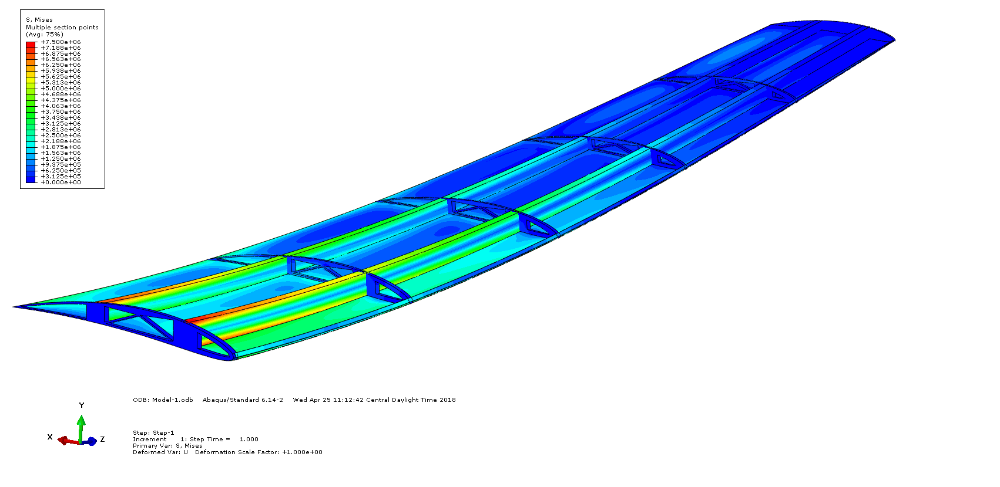

Courses in Design Optimization
I have taken two classes in design optimization, AERO 405 and MEEN 683. In both of these courses, a survey of optimization algorithms were presented and applied to a semester long project. During these courses I learned about gradient and heuristic optimization methods and applied them in various homework and project based applications.
 Optimal design from AERO 405 wing design for Light Sport Aircraft project.In AERO 405, we were paired into teams of 4 students who worked on scripting a structural model in Abaqus (Dassault Systems FEA software) to be optimized. Our project was to design the interior structure of a aircraft wing for a light sport aircraft. This project was subject to material constraints and worked to minimize weight and tip deflection. A multiobjective approach was taken to avoid infeasible solutions, and were treated as a weighted average. The weighting of this objective function was based on student intuition and a design of experiments that informed parameter and design variable influence.
In AERO 683 the objective of the class was to use multidisciplinary tools to solve a design problem. The project that I chose to pursue was a morphing airfoil that
Relevant Academic Coursework
| Course Number | Course Name | Relevant Concepts |
|---|---|---|
| MEEN 683 | Multidisciplinary System Analysis and Design Optimization | Overview of principles, methods and tools in multidisciplinary system analysis and design optimization; engineering systems modeling for analysis, design and optimization; design variable selection, objective functions and constraints; subsystem identification and interface design; gradient-based and heuristic search methods; multi-objective optimization and Pareto optimality. |
| MSEN 601 | Fundamental Materials Science and Engineering | Fundamentals of microstructure- properties and relationship of materials. Topics will include: electronic and atomic structure of solids, structure of crystalline materials, imperfections in crystalline materials, introduction to dislocation theory, mechanical properties, fundamental thermodynamics of materials, phase equilibria and diagrams, diffusion, and kinetics of phase transformations. |
| MEMA 613 | Principles of Composite Materials | Classification and characteristics of composite materials; micromechanical and macromechanical behavior of composite laminae; macromechanical behavior of laminates using classical laminate theory; interlaminar stresses and failure modes; structural design concepts, testing and manufacturing techniques. |
| AERO 405 | Aerospace Structural Design | Overall structural integrity of complete aerospace systems; structures subjected to critical loads; design considerations in aerospace structures. |
| AERO 430 | Numerical Simulation | Numerical and analytical simulation of physical problems in sciences and engineering using applied methods; developing and using numerical techniques for physical problems described by nonlinear algebraic equations, ordinary and partial differential equations. |
| AERO 220 | Introduction to Aerospace Computation | Review of basic skills required for developing computer programs and introduction to more advanced concepts in scientific computing to solve aerospace engineering problems; numerical and analytical methods of solving engineering problems involving interpolation and extrapolation; function approximation; numerical differentiation; integration; solutions to linear and non-linear equations and systems of equations; eigenvalues and eigenvectors, numerical integration of differential equations with aerospace engineering applications. |
| AERO 413 | Aerospace Materials Science | Relationship between aerospace engineering material properties and microstructure; mechanical and thermal properties; environmental degradation; mechanical failure. |
| AERO 402 | Aerospace Vehicle Design II | Continuation of AERO 401. System optimization by examination and analysis of necessary trade-offs. |
| AERO 401 | Aerospace Vehicle Design I | Aerodynamic design, specification, arrangement, performance analysis, weight and balance, stability. |
| AERO 306 | Aerospace Structural Analysis II | Work and energy principles; analysis of indeterminate structures by classical virtual work and finite elements; introduction to elastic stability of columns; application of energy methods to determine stresses, strains and displacements in typical aerospace structures; design considerations in aerospace structures. |
| AERO 304 | Aerospace Structural Analysis I | Structural design considerations; mechanics of structures; introduction to elasticity; constitution of materials; analysis of typical aerospace structures in bending, extension, torsion and shear. |
| AERO 651 | Human Spaceflight Operations | Essential aspects of human spaceflight operations as performed NASA; in-depth understanding of the state-of-the-art in spacecraft operations, including spacecraft systems, ground and launch operations, mission management and on-orbit activities such as science, robotics, spacewalking, and human health maintenance; applications to future space systems. |
| AERO 422 | Active Controls for Aerospace Vehicles | Introduction to the Theory of Automatic Control specifically applied to aerospace vehicles; techniques for analysis and synthesis of linear control systems, stability criteria, systems response and performance criteria; design studies of active controls to improve aerospace vehicle performance. |
| AERO 321 | Dynamics of Aerospace Vehicles | Derivation of the nonlinear flight dynamics equations; linearization; aircraft static stability and control; longitudinal and lateral dynamic stability; development of state-space models; stability derivatives; longitudinal and lateral modes and transfer functions; flying qualities; elements of configuration design; response to control inputs. |
| AERO 423 | Orbital Mechanics | Rocket fundamentals; trajectories including aerodynamics, gravity turn and trajectory optimization, orbital mechanics, orbit lifetimes, three-body problem, orbit perturbations. |
| AERO 310 | Aerospace Dynamics | Spatial kinematics; general motion of particles; Euler angles; Newton-Euler methods for translation and rotation of rigid bodies; work-energy and impulse momentum principles applied to aerospace systems; Linear theory of free and forced vibrations and dynamic response of single and multi-degree of freedom systems; frequency response of first and second order systems with instrumentation applications. |
| AERO 303 | High Speed Aerodynamics | Fundamentals of compressible flow, acoustic waves, shock and expansion waves, shock-expansion theory, supersonic airfoil design, small perturbation theory, conical flow theory, supersonic wing panel methods, supersonic wing design, similarity theory, cone flow, unsteady waves, and theory of characteristics. |
| AERO 301 | Theoretical Aerodynamics | Fundamentals of incompressible flow, conservation principles, continuity, momentum, rotationality, circulation, lift, drag, potential flow, thin airfoil theory, panel methods, airfoil design, high lift devices, finite wing theory, vortex lattice methods, and wing design. |
| AERO 452 | Heat Transfer and Viscous Flows | Navier-Stokes and boundary layer equations; exact and approximate solutions; laminar boundary layers; origin of turbulence; transition; turbulent boundary layers; viscous airfoil design; one and two dimensional heat transfer; methods for steady and transient heat conduction; thermal boundary layers; convection; and radiation. |
| AERO 351 | Aerothermodynamics and Propulsion | Aerothermodynamics of gases; laws of thermodynamics; equilibrium conditions; mixtures of gases; combustion and thermochemistry; compressible internal flows with friction, heat transfer and shock; turbojet cycle analysis and performance; chemical rockets. |